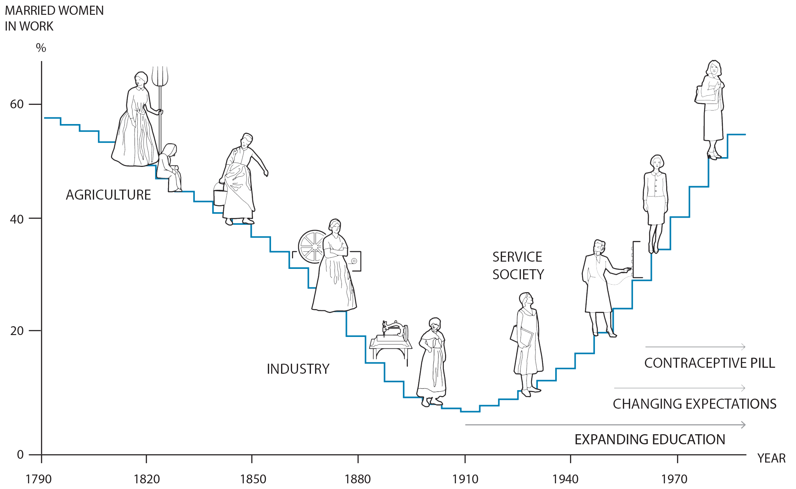

I’m on vacation next week and plan to steer back to energy/water/climate when I return, but I thought I’d cover one more anecdote pointing to “value signaling” as a social problem. I believe that it’s a problem on par with bigotry and could be the fulcrum of the anti-woke movement. In other words, MAGA resonates with certain Americans because some politicians come across as hypocritical when pledging allegiance to the rainbow flag. As the humorist Stephen Colbert said, “Now, I don't see color. People tell me I'm white, and I believe them because police officers call me ‘sir’.”
This year’s Nobel Prize in Economics was awarded to Harvard Professor Claudia Goldin for her work in gender equality, precisely the gender pay gap. This “gap” is the statistic that women, as a class, make substantially less than an equally qualified man. At least partially, the big hairy question Professor Goldin answered is, “Why?”
From the perspective of politics, the implication is that a system designed by and for predominantly white men (a group I am a member of) discriminates against women as a class through pernicious gender-based oppression. Of course, this offends our innate sense of fairness, leading politicians (primarily on the left) to resort to value signaling, promising to fix the system for the allegedly oppressed. The problem is, at least in the US, wage discrimination based on gender has been illegal, for the most part, since 1963. Fixing the system is hard if you don’t know what is broken (or even if it is).
There is an additional personal angle. I was born in 1959 when my mother was 47 years old. Pregnancy in middle age was unusual and medically risky then, so I am lucky to be here, but I sometimes feel as if I’m a generation removed from my peers. My parents met in college (in an era when women typically didn’t attend college) and married in 1935 in the middle of the Great Depression, so theirs is a 20th-century story. I have two older siblings, with 18 years separating me and my nearest sibling.
My mother was a stay-at-home mom for the first years of their marriage despite an education that roughly matched my father’s. With the onset of World War II, she entered the workforce and afterward continued to work part-time for the U. S. Postal Service, juggling domestic and work-related responsibilities. To better understand her life’s unfamiliar trajectory, she was born in 1912, the same year the zipper was invented, and the first traffic light was installed. She saw two World Wars but didn’t learn to drive until she was in her 40s. I’m sure everyone would say this about their mother, but she was an amazing woman.
Working as a civil servant at the USPS, she wasn’t discriminated against because of her gender. She worked because she wanted to, for what she called “mad money”, to supplement the allowance my father provided and give her limited financial freedom. I think this nuanced view of gender roles shaped my own.
More recently, I became interested in the origin of the gender pay gap after I ran across a fascinating study of UBER drivers by University of Chicago professor John List, showing that a 7% per-hour pay gap persists even in the gig economy! How can a system where “equal pay for equal work” is algorithmic show any gender bias? Summarizing the paper’s conclusions: Men get paid more on average because they tend to drive faster, are more experienced, and will risk going into dangerous areas and at dangerous times if they pay better.
Back to the Nobel: How did Goldin use data to dissect the gender pay gap? Specifically, she sought and refined historical data collected before the 20th century and wove together a tight narrative about how that data reflected economic changes through gender roles. Her work is summarized graphically:

This chart shows that women worked the farm when American society was agrarian. As America moved toward more of an industrial economy, women did some work from home but, by and large, began to move away from the formal workforce as home and work became separate places. Then, as America moved toward more of a knowledge-based economy, with the onset of social changes (in my mom’s case, World War II) and contraception, women returned to the workforce.
Goldin identified and quantified different factors that contribute to the gender pay gap:
-
Occupational segregation: Women are more likely to work in lower-paying occupations (nurses, teachers, and social workers) than men (engineers, doctors, and lawyers) due to various factors, including historical norms, gender stereotypes, and affordable childcare.
-
Interruptions to work: Women are more likely to take time off to raise children or care for elderly relatives. Women’s earnings tend to decline after they have children, while men’s earnings typically increase.
-
Negotiation: Women are less likely than men to negotiate for higher salaries, partly because they are more concerned with appearances and don’t want to seem spoiled 1 .
These factors are not at odds with my own life experience. Unsurprisingly, after women have children, the gender pay gap widens significantly, partly because women follow traditional gender roles when starting a family. They choose to take more time off to care for their children, disadvantaging them in the workplace relative to men. When they return to the workforce, they often accept lower-paying jobs with greater flexibility, seeking a better “work-life balance”.
In the end, Goldin concludes that “we don’t have tons of evidence that [women earn less than men do, today, because of] true discrimination.” ” 2 So, if a politician offers their solemn pledge to “fix” the gender pay gap without a specific, nuanced plan, I think it’s safe to conclude that the subliminal message is, “Vote for me, I am not sexist, and this pledge proves it!” It could also be a cynical pledge to buy the women’s vote, as “Vote for me, and get a raise!” Either way, it rings of hypocrisy.
Pulling us back to the present and the theme of this serial, let me suggest that it is time for the gender-pay zealots to declare victory and move on. The gender pay discrimination battle has been fought and won—the remaining mathematical inequality reflects an inherent, possibly intransigent, gender bias rather than unfairness in the law. Don’t get me wrong: I believe we should continue refining our system to enable every individual to achieve their full potential, including addressing the disproportionate burden of caregiving borne by women. But instead of attempting to force a result that strictly enforces mathematical equality, we should also consider that men and women are different.
This topic is tangentially relevant to the climate control theme of this series as well: Goldin’s work was notable because she actively sought to stitch together different sources and types of data to determine whether our current perspective (mostly built on recent data) is accurate. Modern climate models suffer from the same problem. They rely on abundant, digitized data with precise, time-stamped data that was impossible to collect even in the recent past. It brings to mind the first installment 3 , where I asked, “Is global warming real?” and answered it by citing regular temperature measurements recorded by hand over centuries in a single location in Britain.
Data rules.
Thank you for reading Healing the Earth with Technology. This post is public, so feel free to share it.
For one perspective, see this article . In 2015, actress Jennifer Lawrence spoke out about the gender pay gap in Hollywood after it came to light that she was paid less than her male co-stars in the film “American Hustle.” For her part, Ms. Lawrencee blamed herself for not negotiating harder. Lawrence wrote that she was “scared to be ‘difficult’” and didn’t want to “seem spoiled.” However, she realized that her shortcomings as a negotiator are rooted in the fact that women are often penalized for negotiating salaries and raises. Lawrence encouraged other women to stand up for themselves and negotiate for their worth, writing, “I’m over trying to find the ‘adorable’ way to state my opinion and still be likable! F— that.”
[See earlier posts in this series]